CS184/284A Fall 2026 Homework 4 Write-Up
Link to webpage: cal-cs184-student.github.io/hw4-klk645445-writeup
Link to GitHub repository: github.com/cal-cs184-student/hw4-klk645445
Overview
In this homework, I built a real-time cloth simulator and a set of GLSL shaders to render it. The cloth is modelled as a grid of point masses connected by structural, shearing and bending springs. In every time step, I add up gravity and the spring forces from Hooke's law, move the masses with Verlet integration, and then fix up the result, first by resolving collisions with spheres and planes, then by pushing apart parts of the cloth that come too close to each other, using a spatial hash so that each mass is only compared with its neighbours, and finally by limiting how far any spring can stretch in one step. On the rendering side, I wrote vertex and fragment shaders for diffuse and Blinn-Phong shading, texture mapping, bump and displacement mapping, and mirror reflections from a cubemap.
The most interesting thing I learned is how much of a simulation's behaviour comes from small choices outside the
physics itself. Only the ratio of the spring constant to the density affects the result, damping decides whether the
cloth ever comes to rest, and the order of the steps in simulate decides whether a heavy cloth stays on a
plane or sinks through it. I also found it interesting that measuring collision corrections from the previous position
is enough to remove a mass's velocity, because Verlet integration has no velocity variable to reset. On the shader side,
comparing bump and displacement mapping made it clear how convincing a fake normal can be until you look at the
silhouette.
Part 1: Masses and springs
The cloth is modelled as a grid of point masses connected by springs. The masses carry the cloth's weight and
position, and the springs hold them together and push back whenever the cloth is stretched, sheared or bent. In
Part 1, I built this grid in Cloth::buildGrid, first creating all of the point masses and then connecting
them with springs.
The cloth has num_width_points \( \times \) num_height_points masses spread evenly over a
width \( \times \) height area. Since the first mass sits at 0 and the last one at the far
edge, there is one gap fewer than there are points, so the spacing between masses is
\[ \Delta x = \frac{\text{width}}{\text{num_width_points} - 1}, \qquad \Delta y = \frac{\text{height}}{\text{num_height_points} - 1}. \]
The mass with grid index \( (x, y) \) is placed depending on the cloth's orientation. A horizontal cloth lies flat at a
height of 1, so its masses are spread over the \( xz \)-plane at \( (x\Delta x,\, 1,\, y\Delta y) \). A vertical cloth
hangs in the \( xy \)-plane at \( (x\Delta x,\, y\Delta y,\, z) \), where \( z \) is a small random offset between
\( -\frac{1}{1000} \) and \( \frac{1}{1000} \). Without this offset the vertical cloth would be perfectly flat, so every
force on it would lie in the same plane and nothing would ever push it out of that plane to make it ripple or fold.
I looped over the rows on the outside and the columns on the inside, so the masses are stored in row-major order and
the mass \( (x, y) \) ends up at index \( y \cdot \text{num_width_points} + x \) of point_masses. The
rendering code relies on this order. For each mass, I also checked whether its \( (x, y) \) index appears in the
pinned list from the scene file. Pinned masses stay fixed in place during the simulation, which is how
the cloth in pinned2.json hangs from two of its corners.
The springs are added in a second pass, only after every mass has been created. Each spring stores pointers to its two masses, and adding masses to the vector while taking pointers into it could make the vector resize and leave those pointers dangling. In the second pass, each mass connects to neighbours that come before it in the grid, so that every pair of masses gets exactly one spring. There are three types of springs, and each one resists a different kind of deformation.
- Structural springs connect a mass to the mass directly to its left and directly above it. They resist the cloth stretching apart.
- Shearing springs connect a mass to the masses diagonally above it on the left and on the right. They stop the square cells of the grid from collapsing into diamonds, which structural springs alone cannot prevent since a sheared cell keeps all of its edge lengths.
- Bending springs connect a mass to the mass two to its left and two above it. They resist the cloth folding sharply, since a crease between three masses in a row brings the two outer masses closer together.
Masses near the edges of the grid have fewer neighbours, so each spring is only added if its neighbour actually exists,
for example only if \( x \ge 1 \) for the structural spring to the left. The rest length of each spring is the distance
between its two masses when it is created, which the Spring constructor computes.
The screenshots below show the wireframe of pinned2.json with different spring types enabled, with the
whole cloth in the top row and a close-up of one corner in the bottom row. Without
shearing springs, the grid is made of plain squares. With only shearing springs, every cell shows an X made of the two
diagonals, and with all of the springs both patterns appear together. Bending springs are hard to see in the wireframe
on their own. Because there is one starting at every mass, their two-cell-long lines overlap and cover the same
segments as the structural springs, so the difference between them only shows up once the cloth starts moving.
|
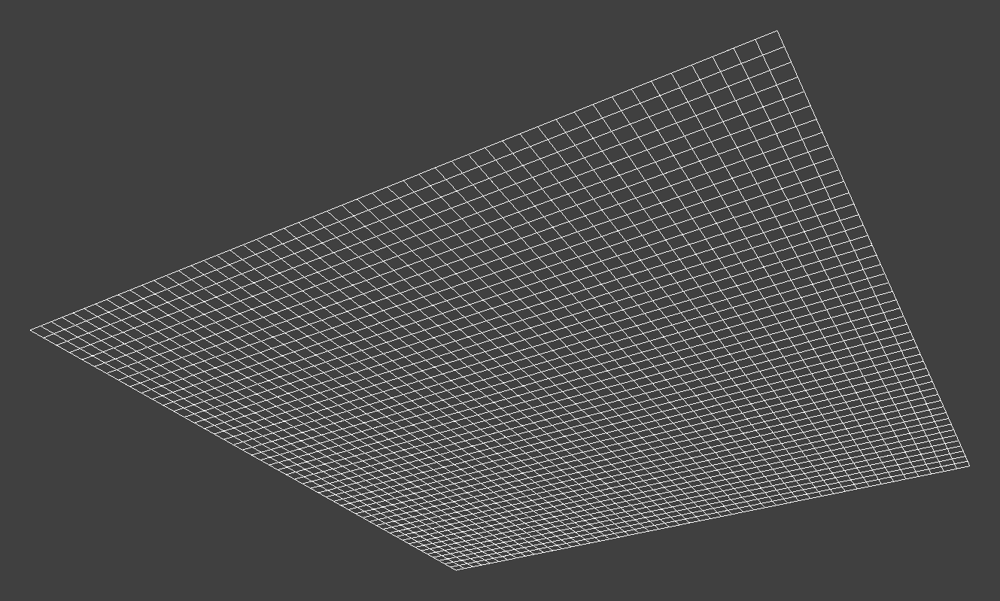 |

|

|
|
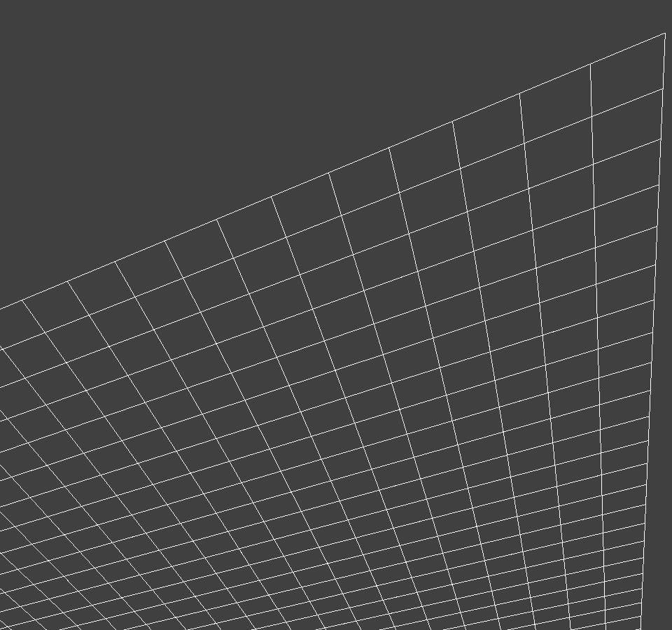 |

|

|
Part 2: Simulation via numerical integration
With the grid in place, Part 2 makes the cloth move. Cloth::simulate advances the cloth by one small
timestep \( \Delta t \), and the simulator calls it simulation_steps times per frame. Each call has three
stages. It computes the total force on every point mass, uses those forces to move the masses with Verlet integration,
and then corrects any spring that was stretched too far. The mass of each point is the cloth's total mass divided evenly
between the points,
\[ m = \frac{\text{width} \cdot \text{height} \cdot \text{density}}{\text{num_width_points} \cdot \text{num_height_points}}. \]
The first stage starts every mass from zero force. External forces such as gravity are given as accelerations, so I summed them into one acceleration \( \mathbf{a}_{\text{ext}} \) and set each mass's force to \( m\,\mathbf{a}_{\text{ext}} \), which also clears the forces left over from the previous step. Then I added the spring forces. For every spring whose type is enabled in the GUI, Hooke's law gives a force of magnitude \[ F_s = k_s \left( \|\mathbf{p}_b - \mathbf{p}_a\| - l \right), \] where \( l \) is the spring's rest length. The force acts along the spring, so I added \( F_s \) times the unit vector from \( \mathbf{p}_a \) to \( \mathbf{p}_b \) to the first mass and subtracted it from the second. When the spring is stretched, \( F_s \) is positive and the two masses are pulled towards each other, and when it is compressed they are pushed apart. Bending springs use \( 0.2\,k_s \) instead of \( k_s \), since they should resist folding much more weakly than structural and shearing springs resist stretching.
The second stage moves every mass that is not pinned. Verlet integration does not store velocities. It uses the
previous position to estimate how far a mass moved in the last step and keeps it moving that way, then adds the
effect of the current forces,
\[ \mathbf{x}_{t+\Delta t} = \mathbf{x}_t + (1 - d)\,(\mathbf{x}_t - \mathbf{x}_{t-\Delta t}) + \mathbf{a}_t\,\Delta t^2, \]
where \( \mathbf{a}_t \) is the mass's total force divided by \( m \) and \( d \) is the damping. The GUI shows damping as
a percentage, so \( d \) is cp->damping divided by 100. The factor \( 1 - d \) removes a little of the
motion every step, standing in for friction and air resistance. Before overwriting the position, I saved it so that it
becomes last_position for the next step.
The third stage follows Provot's 1995 paper. A single timestep can stretch a spring far more than real cloth would
stretch, especially with a low spring constant or a heavy cloth. After integrating, I looped over every spring again,
and if one was longer than 110% of its rest length, I moved its masses towards each other along the spring until it
was exactly 110% long. The correction is split in half between the two masses, except when one of them is pinned, in
which case the free mass takes the whole correction, and when both are pinned nothing moves. I only change
position and not last_position, so the correction also reduces the velocity that Verlet
infers in the next step.
Effect of the parameters
I ran pinned2.json with one parameter changed at a time and compared the cloth after 450 frames, which is
5 seconds of simulated time. The defaults are \( k_s = 5000 \) N/m, a density of 15 g/cm\( ^2 \) and a damping of 0.2%,
and the screenshots use the normal shader so that the folds are easy to see.
The spring constant \( k_s \) controls how stiff the cloth is. With a very low \( k_s \) of 50, the springs barely resist gravity, so the cloth stretches until the Provot constraint stops it. It hangs lower, and the sagging top edge bunches up into several narrow ripples, because the soft bending springs let the cloth fold at a very small scale. Even after 5 seconds it was still moving slightly. As \( k_s \) increases the ripples merge into one smooth fold, and with a \( k_s \) of 50000 the cloth is so stiff that it barely stretches at all. It hangs the highest, and the curve between the two pinned corners is the shallowest.

|

|
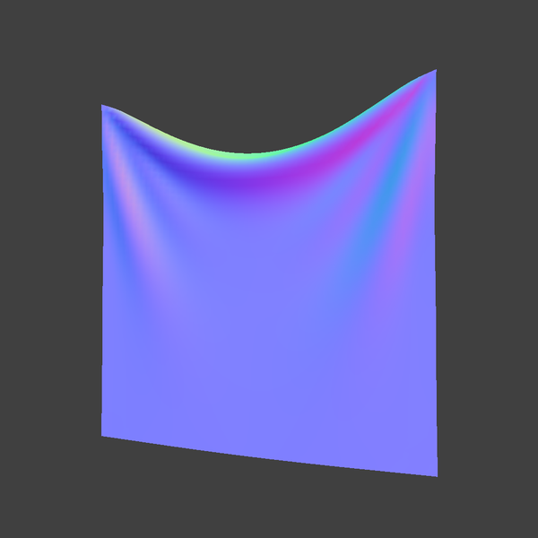 |

|
Density has the opposite effect. A denser cloth is heavier, so gravity pulls harder on the same springs and the cloth stretches and sags more, while a lighter cloth hangs flatter. In fact, the two parameters are tied together. Gravity gives every mass the same acceleration whatever its mass, while a spring's acceleration is \( F_s / m \), so only the ratio \( k_s / m \) affects the motion. A density of 1.5 g/cm\( ^2 \) produced exactly the same images as a \( k_s \) of 50000, and a density of 150 g/cm\( ^2 \) looks the same as a \( k_s \) of 500. Dividing the density by 10 is equivalent to multiplying \( k_s \) by 10.
|
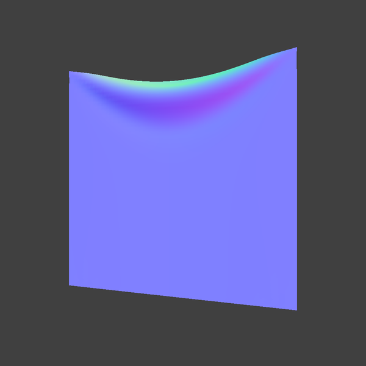 |
|

|
Damping controls how quickly the cloth loses energy, so its effect shows up while the cloth is falling rather than at rest. The screenshots below show the cloth 60 and 120 frames after it is released, which is about 0.7 and 1.3 seconds. With no damping, the cloth never loses the energy it gains from falling. It swings past the hanging position, crumples into many small wrinkles and keeps moving chaotically, and it was still moving a lot after 5 seconds. With the default damping of 0.2%, the cloth falls, swings once and settles into a smooth fold. With a damping of 1%, every step removes so much motion that the cloth drifts down slowly, as if it were falling through a thick liquid. After 1.3 seconds most of it is still close to horizontal, while the default cloth is already hanging straight down, and it was still slowly settling after 5 seconds.
|
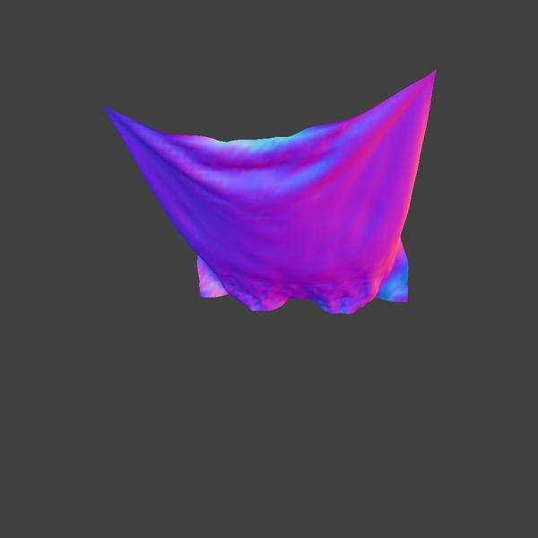 |
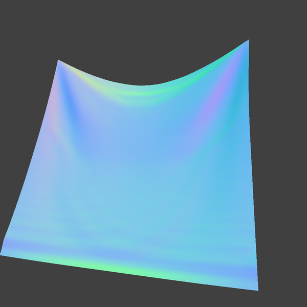 |

|
|
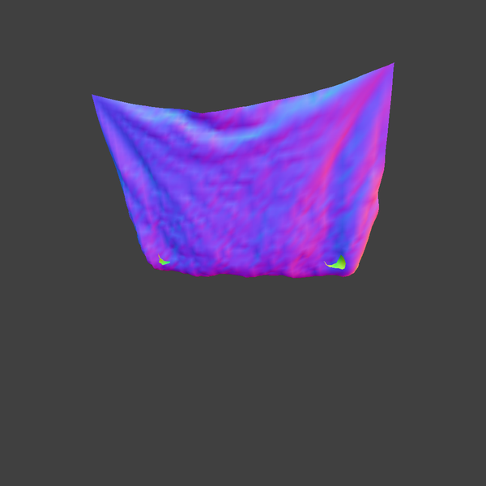 |
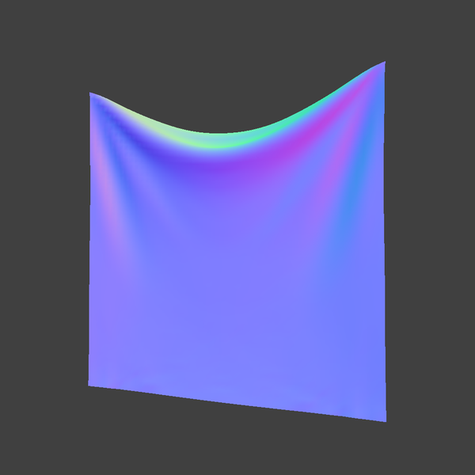 |
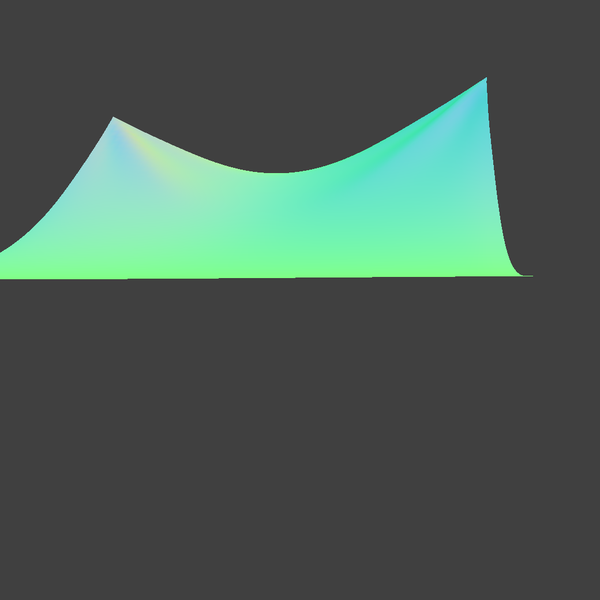 |
Finally, this is pinned4.json at rest with all of the default parameters, shown with the normal shader. The
cloth is pinned at all four corners, so it sags into a smooth bowl shape between them.

pinned4.json at rest, default parametersPart 3: Handling collisions with other objects
So far nothing stops the cloth from falling through objects in the scene. In Part 3, I added collisions with spheres
and planes. In Cloth::simulate, right after the Verlet step moves the masses and before the Provot
correction, I loop over every point mass and call collide on it for every collision object in the scene.
collide is a virtual function of CollisionObject, so the same loop calls the sphere's or the
plane's version depending on the object. Each version checks whether the mass has ended up somewhere it should not be,
and if so, moves it back to the surface.
Both collisions use the same idea for the final correction. Once I know the point \( \mathbf{t} \) on the surface where
the mass should be, I do not simply move the mass there. Instead, I measure the correction from the mass's position in
the previous step and scale it by \( 1 - f \), where \( f \) is the object's friction,
\[ \mathbf{x}_{\text{new}} = \mathbf{x}_{\text{last}} + (1 - f)\,(\mathbf{t} - \mathbf{x}_{\text{last}}). \]
Because Verlet integration infers velocity from the last two positions, measuring from last_position
removes the velocity that carried the mass into the object. If I only moved position onto the surface,
the mass would keep its velocity into the object and dig back in on the next step. The friction factor makes the mass
cover only part of the distance along the surface, so with higher friction the cloth slides less.
For a sphere with centre \( \mathbf{c} \) and radius \( R \), a mass collides if it is inside the sphere, which is when \( \|\mathbf{x} - \mathbf{c}\| < R \). In that case, the closest point on the surface lies in the same direction from the centre, so the tangent point is \[ \mathbf{t} = \mathbf{c} + R\,\frac{\mathbf{x} - \mathbf{c}}{\|\mathbf{x} - \mathbf{c}\|}, \] and I apply the correction above.
A plane is defined by a point \( \mathbf{p} \) on it and a unit normal \( \mathbf{n} \), and the signed distance of a point
\( \mathbf{x} \) from it is \( d(\mathbf{x}) = (\mathbf{x} - \mathbf{p}) \cdot \mathbf{n} \), which is positive on the side the
normal points to and negative on the other side. A plane has no inside, so instead a mass collides if it crossed the
plane during the last step, which is when \( d(\mathbf{x}) \) and \( d(\mathbf{x}_{\text{last}}) \) have different signs. In
that case, I project the current position straight onto the plane with
\( \mathbf{t} = \mathbf{x} - d(\mathbf{x})\,\mathbf{n} \). A mass placed exactly on the plane could end up on either side due
to rounding, so I offset the target by a tiny SURFACE_OFFSET along the normal, towards the side the mass
came from, before applying the correction.
Results
These screenshots show sphere.json after the cloth has come to rest over the sphere, with three different
spring constants. With a low \( k_s \) of 500, the cloth is soft, so it clings closely to the sphere and hangs almost
straight down, falling into many narrow folds. It also stretches the most, so its corners reach the lowest. With the
default \( k_s \) of 5000, the cloth still drapes over the sphere but holds its shape a little more, with fewer and wider
folds. With a high \( k_s \) of 50000, the cloth is stiff enough to resist bending around the sphere. It flares out
sideways like a skirt, with only a few large folds, and its corners stick out instead of hanging down.
|
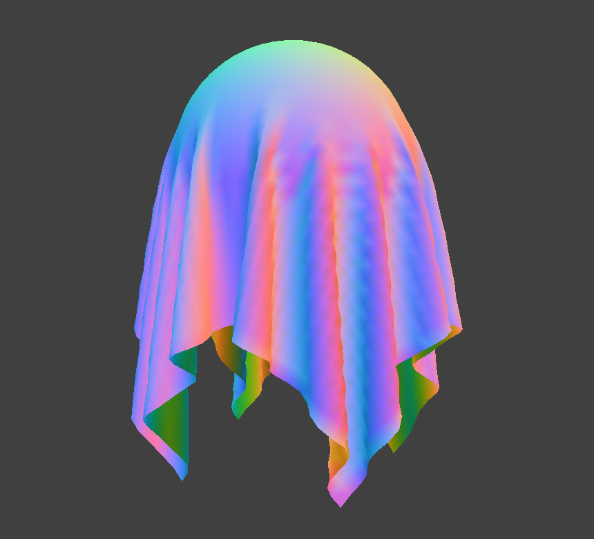 |
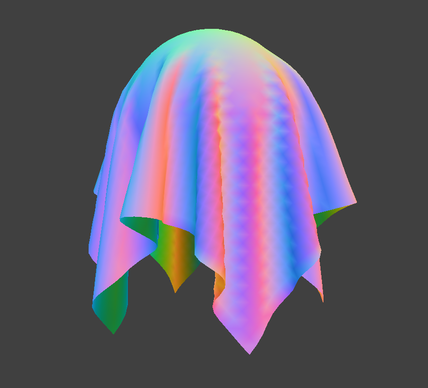 |

|
For plane.json, the cloth falls onto the plane and lies flat on it without sinking through. The left image
uses the normal shader, where the cloth is the lighter green rectangle on top of the plane, and the right image shows
the same moment in wireframe.
|
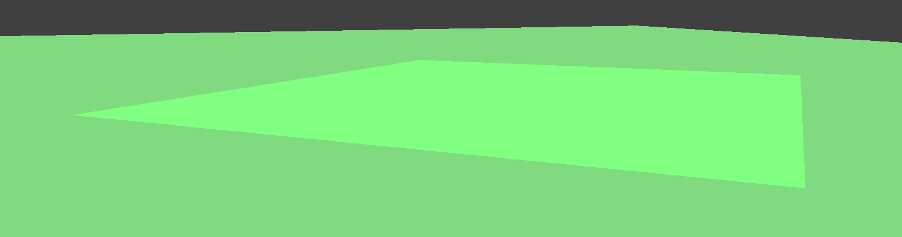 |
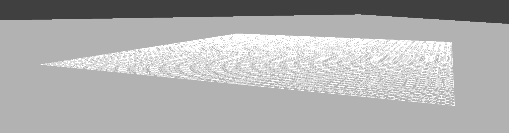 |
Part 4: Handling self-collisions
The collisions from Part 3 only stop the cloth from passing through other objects. Nothing stops it from passing through itself, so a cloth that falls and folds over would clip straight through its own layers. To prevent this, every point mass needs to be pushed away from any other point mass that gets too close. Checking every pair is too slow, since the \( 50 \times 50 \) cloth has 2500 masses and therefore over 3 million pairs, and this would have to run in every simulation step. Instead, I use spatial hashing so that each mass is only compared with the masses near it.
Spatial hashing divides space into a 3D grid of boxes and groups the point masses by the box they are in. The boxes have
width \( w = 3\,\frac{\text{width}}{\text{num_width_points}} \), height
\( h = 3\,\frac{\text{height}}{\text{num_height_points}} \) and depth \( t = \max(w, h) \), so each box spans about three
mass spacings. In Cloth::hash_position, I find the indices of the box that contains a position by dividing
each coordinate by the box size and rounding down,
\[ b_x = \left\lfloor \frac{x}{w} \right\rfloor, \quad b_y = \left\lfloor \frac{y}{h} \right\rfloor, \quad b_z = \left\lfloor \frac{z}{t} \right\rfloor. \]
I use floor instead of truncating so that negative coordinates are handled correctly, since truncation
would round both \( -0.5 \) and \( 0.5 \) to box 0. I then combine the three indices into a single number,
\[ \text{key} = b_x + 300\,b_y + 300^2\,b_z, \]
which is unique for every box as long as the indices stay below 150 in magnitude, which is true for this scene. I kept the
multipliers small because the key is stored as a float, which only has about 7 significant digits, so very
large multipliers would make neighbouring boxes round to the same key.
In Cloth::build_spatial_map, I clear the old map, then loop over every point mass, compute its key, and add
a pointer to it to the list stored for that key, creating a new list the first time a key appears. In
Cloth::self_collide, I look up the list for the mass's own box and loop over the other masses in it,
skipping the mass itself and any mass at exactly the same position, since the direction between them is undefined. The
cloth is treated as having a thickness, so two masses should be at least \( 2 \cdot \text{thickness} \) apart. For every
candidate \( \mathbf{x}_c \) closer than that, I compute the correction that would push the mass \( \mathbf{x} \) away
from it until they are exactly that far apart,
\[ \mathbf{c} = \frac{\mathbf{x} - \mathbf{x}_c}{\|\mathbf{x} - \mathbf{x}_c\|}\,\big(2 \cdot \text{thickness} - \|\mathbf{x} - \mathbf{x}_c\|\big). \]
I average all of these corrections and divide the average by simulation_steps before adding it to the
mass's position. Dividing spreads the push over many steps, which keeps the layers from jumping apart violently in a
single step. Each call only moves the one mass passed in, and the candidate gets its own correction when
self_collide is called on it.
In Cloth::simulate, right after the Verlet step and before the collisions with other objects, I rebuild the
spatial map and then call self_collide on every point mass. The map has to be rebuilt in every step because
the masses move.
Results
These screenshots show selfCollision.json, where a vertical cloth falls onto a plane, with the default
parameters. When the bottom edge hits the plane, the rest of the cloth keeps falling onto it and the bottom starts to
buckle into ripples. These ripples turn into folds that stack on top of each other, and by frame 60 the whole cloth has
collapsed into a pile of layers. Instead of passing through each other, the layers slide over each other and spread out
into a long strip folded over a few times. The lighter green and the purple parts of the strip are layers facing
opposite ways, which shows that the cloth has really folded over itself. After that, it slowly relaxes, and by frame 800
it lies almost still on the plane, with the folds still visible along its edges.
|
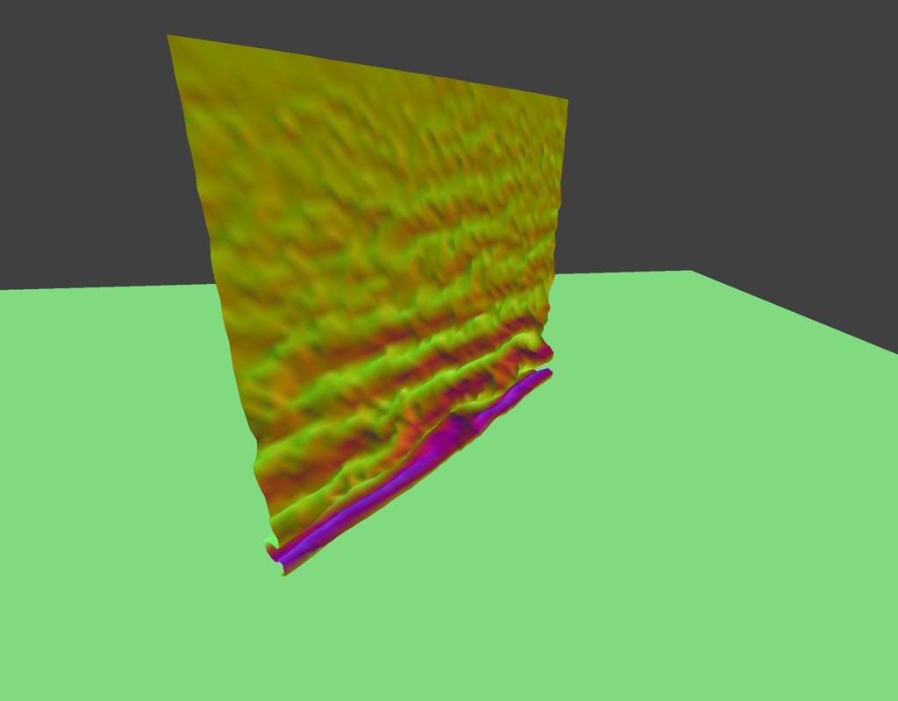 |
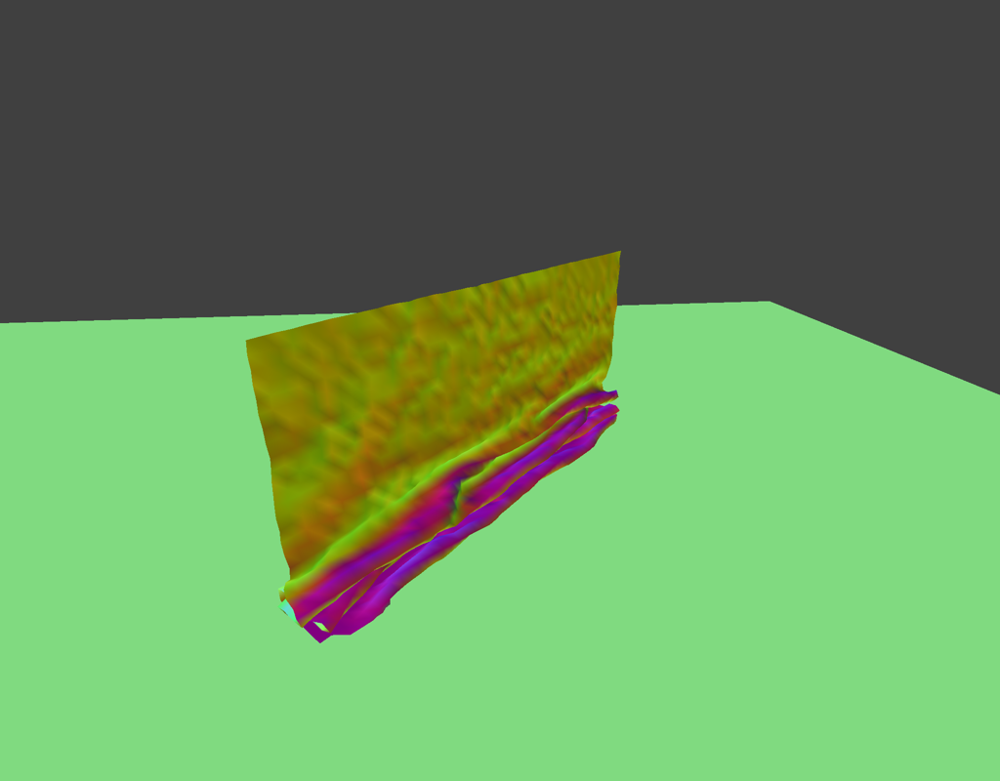 |
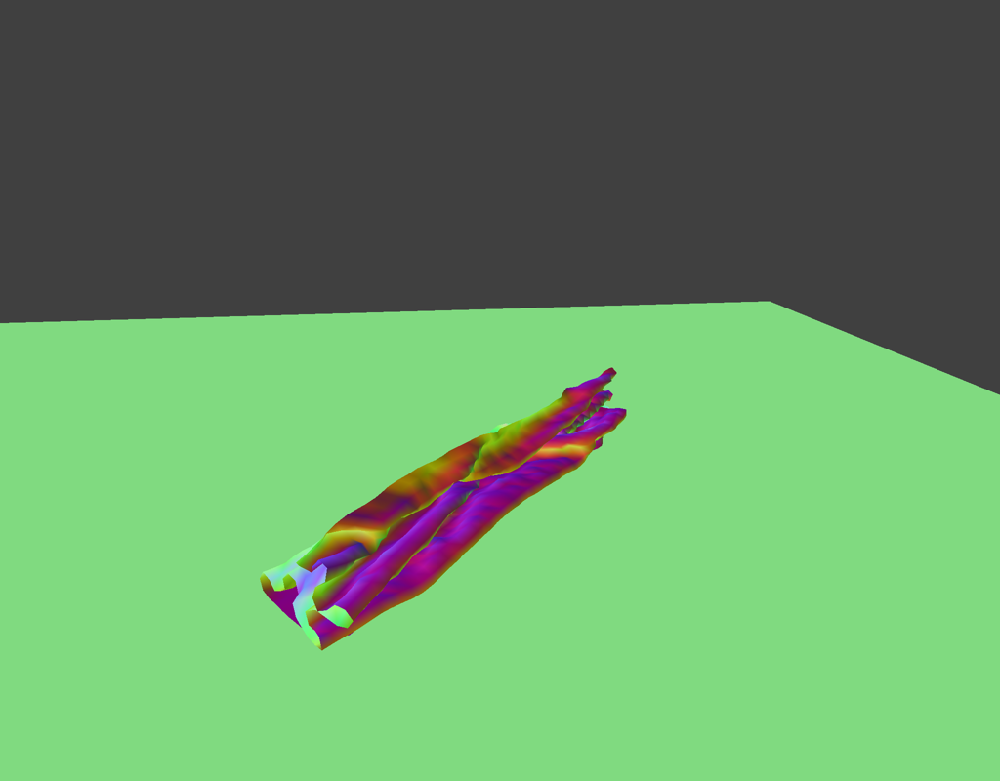 |
|
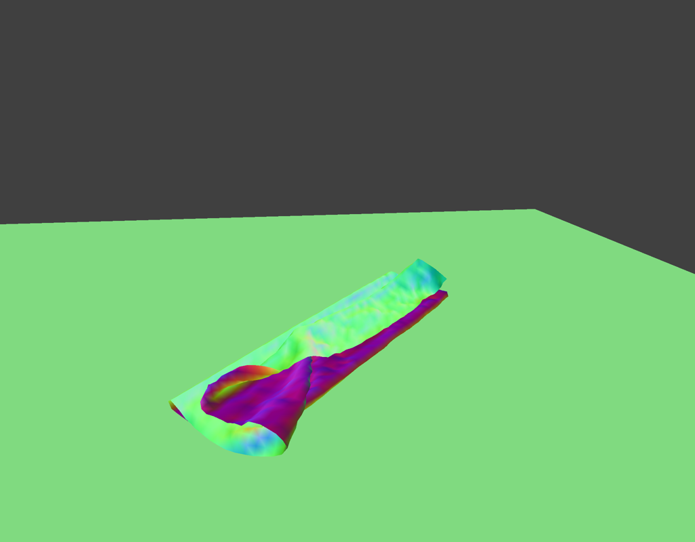 |
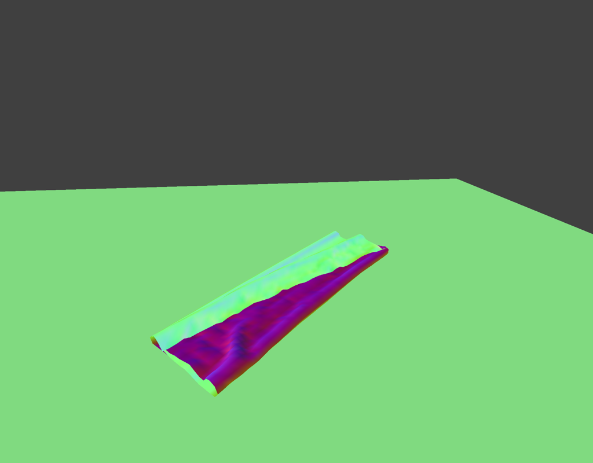 |
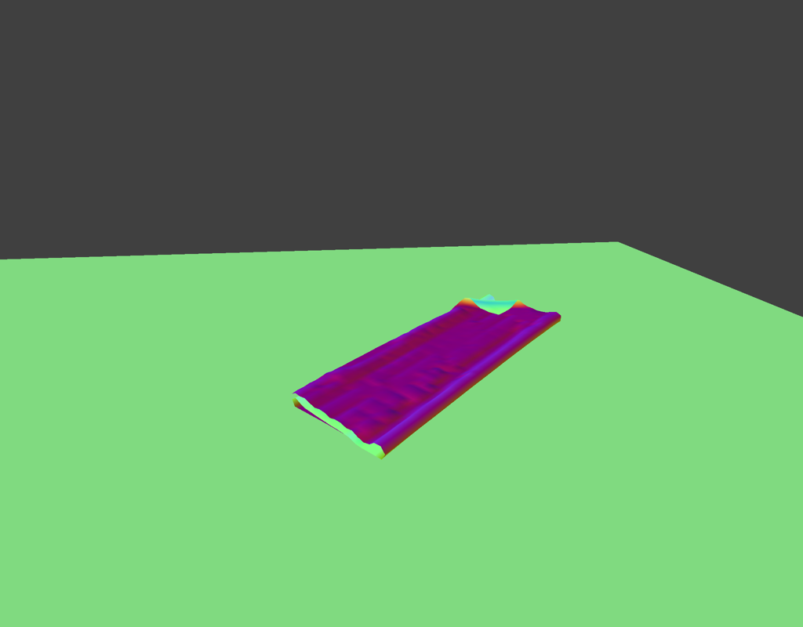 |
Effect of density and \( k_s \)
As in Part 2, only the ratio of \( k_s \) to the density matters, and the images below confirm this, since a density of 1.5 g/cm² looks the same as \( k_s = 50000 \), and a density of 150 g/cm² looks the same as \( k_s = 500 \). A low density or a high \( k_s \) makes the cloth stiff compared to its weight. Instead of crumpling, the bottom of the cloth bends out to one side in a single large, smooth fold, and the cloth ends up lying as a few wide loops. A high density or a low \( k_s \) does the opposite. The cloth is heavy compared to how hard its springs pull back, so it cannot hold its shape. At frame 40 it crumples into many small, tight pleats right where it touches the plane, and it collapses into a thin crumpled heap instead of a few clean folds.
|
|
|
|
|
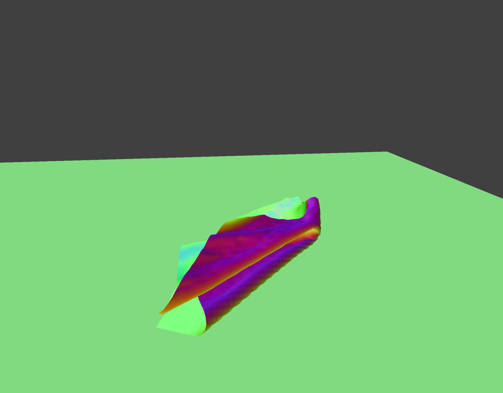 |
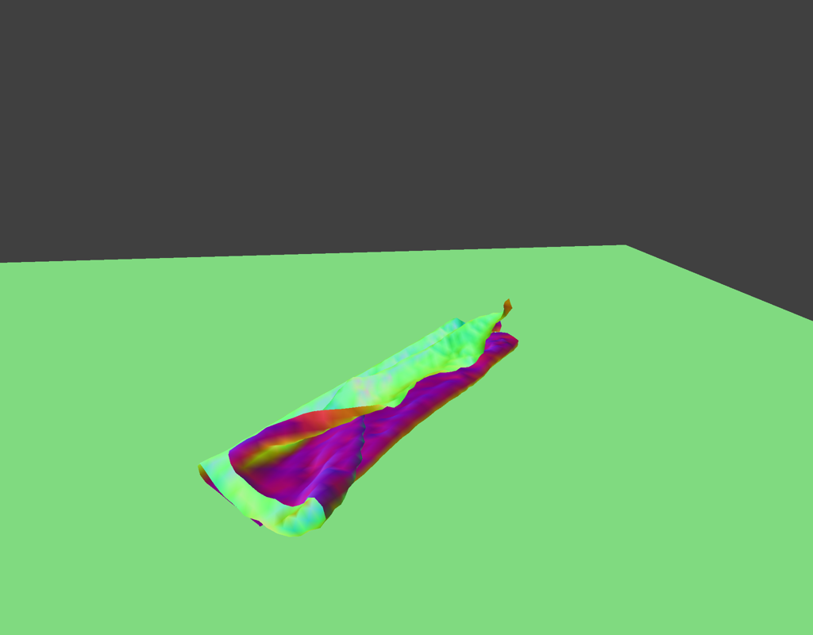 |
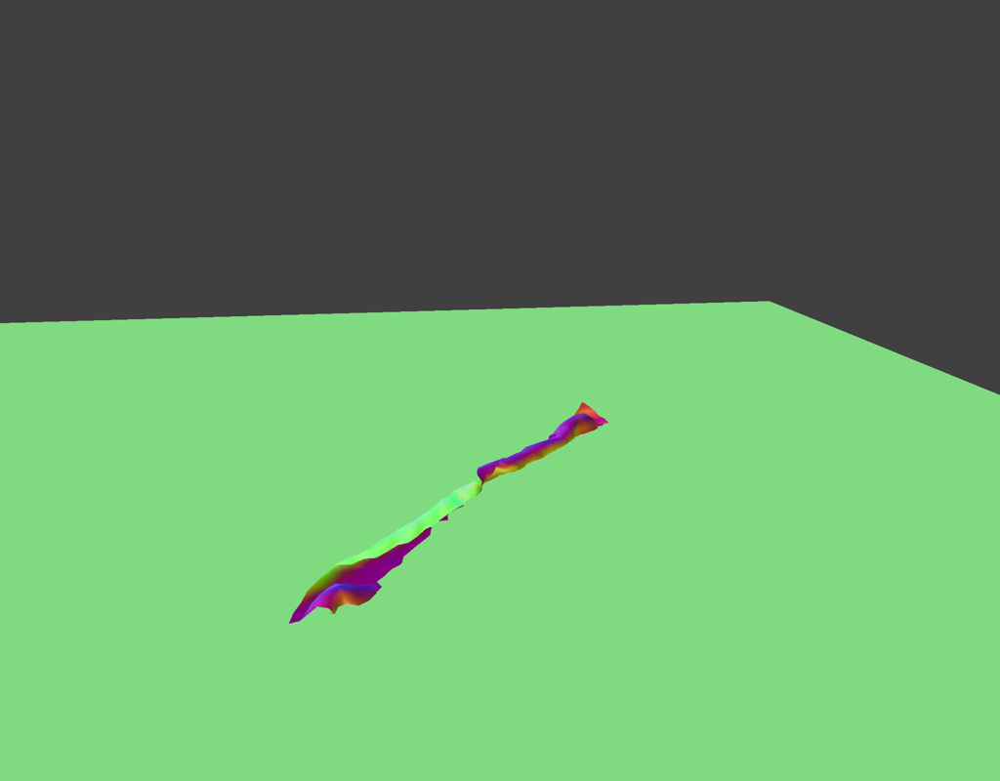 |
|
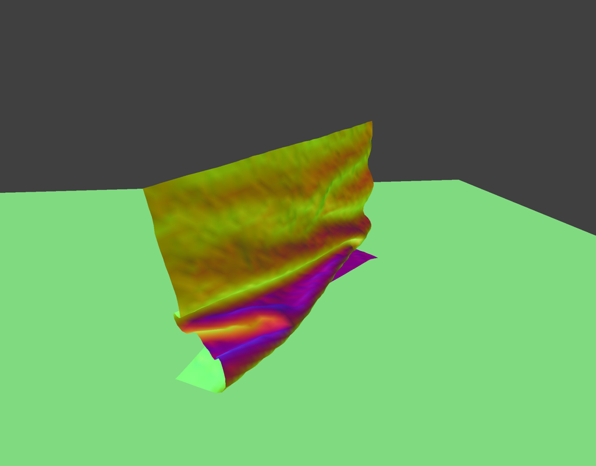 |
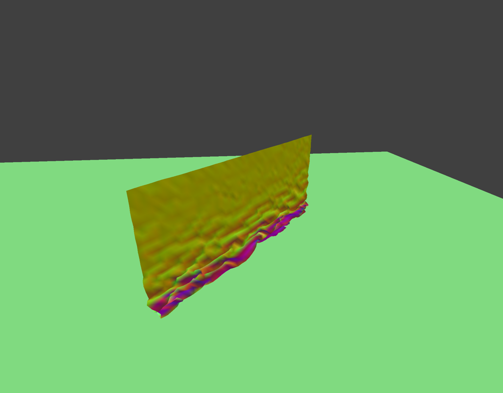 |
|
|
|
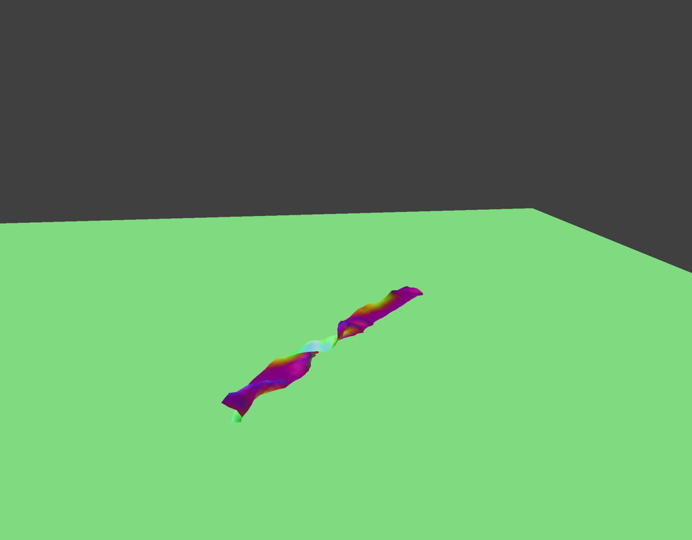 |
With a density of 150 g/cm² or \( k_s = 500 \), parts of the cloth are already missing at frame 80, and shortly after
that the whole cloth sinks through the plane, as shown below from further away. This comes from the order of the
steps in simulate. The springs of such a soft cloth are stretched far past their rest length, so the Provot
correction, which runs after the plane collision, moves some masses by large amounts and can pull them below the
plane. In the next step, both position and last_position of those masses are below the plane,
so the plane never sees them cross it and stops correcting them, and they drag the rest of the cloth down with them. To
confirm this, I ran the collisions a second time after the Provot correction, and the cloth then stayed on top of the
plane for both settings. With the default parameters, the springs never stretch enough for this to happen.
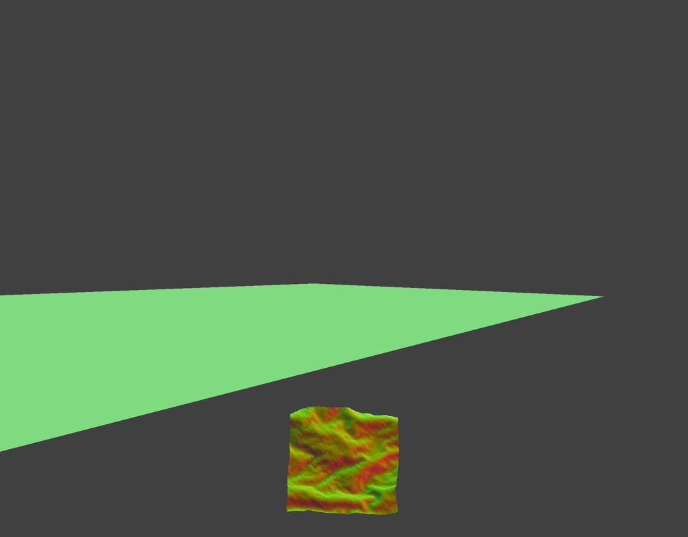
Part 5: Shaders
Shader programs
A shader program is a small program that runs on the GPU instead of the CPU, as part of the pipeline that turns triangles into pixels. Since the GPU runs thousands of copies of it in parallel, one for each vertex or pixel, it can shade the whole cloth in real time, which would be far too slow with a ray tracer like the one in Homework 3. In OpenGL, a shader program is made of two stages written in GLSL, a vertex shader and a fragment shader.
The vertex shader runs once for every vertex of the mesh. Its main job is to transform the vertex's position from model
space to the screen by multiplying it with the model and view-projection matrices, and to write the result to
gl_Position. It also outputs per-vertex values that the later stage needs, such as the world-space position,
the normal, the tangent and the uv coordinates. It can also change the geometry itself, which is how displacement mapping
moves the vertices of the sphere. The GPU then rasterizes each triangle and interpolates these outputs across it with
barycentric coordinates, as in Homework 1.
The fragment shader then runs once for every pixel covered by a triangle, and receives the interpolated values for that pixel. It uses them, together with uniforms that are the same for every pixel, such as the light's position and intensity, the camera's position and the textures, to compute the final colour of the pixel. Lighting and material effects come from how the two stages work together. The vertex shader puts the geometry in place and passes along the surface information, and the fragment shader uses that information to evaluate a lighting model or look up a texture at every pixel. Because the normal is interpolated and the lighting is computed per pixel, the shading varies smoothly across each triangle instead of being flat, and perturbing the normal in the fragment shader is enough to make a flat surface look bumpy.
Blinn-Phong shading
The Blinn-Phong model approximates how light reflects off a surface as the sum of three parts. The ambient term \( k_a I_a \) is a constant amount of light added everywhere. It stands in for light that bounces around the scene indirectly, which this model does not trace, so that parts facing away from the light are not completely black. The diffuse term \( k_d \frac{I}{r^2} \max(0, \mathbf{n} \cdot \mathbf{l}) \) is the same Lambertian term as in the diffuse shader. It models a matte surface that scatters light equally in all directions, so it depends only on the angle between the normal \( \mathbf{n} \) and the direction to the light \( \mathbf{l} \), and falls off with the squared distance \( r^2 \) to the light. It does not depend on where the camera is. The specular term \( k_s \frac{I}{r^2} \max(0, \mathbf{n} \cdot \mathbf{h})^p \) models the shiny highlight. Here \( \mathbf{h} \) is the half vector, the normalized sum of the direction to the light and the direction to the camera. When \( \mathbf{h} \) lines up with the normal, the light is reflected straight towards the camera, and the highlight is brightest. The exponent \( p \) controls how quickly the highlight fades as they move apart, so a larger \( p \) gives a smaller, sharper highlight, as on a shinier material. The full model adds all three, \[ L = k_a I_a + k_d \frac{I}{r^2} \max(0, \mathbf{n} \cdot \mathbf{l}) + k_s \frac{I}{r^2} \max(0, \mathbf{n} \cdot \mathbf{h})^p. \]
In my shader, I compute the normal, the direction to the light, the direction to the camera and the half vector at every
pixel, and keep the three terms in separate variables before adding them. I used \( k_a = 0.1 \), \( I_a = 1 \),
\( k_d = 1 \), \( k_s = 0.5 \) and \( p = 100 \). The images below show sphere.json after the cloth has
settled, with each term on its own and then the full model. The ambient term alone is a flat, dark grey silhouette with
no shading at all, since it is the same everywhere. The diffuse term alone gives all of the shape, with the tops of the
folds facing the light bright and the insides of the drape black. The specular term alone is black almost everywhere,
except for small bright highlights on the top of the sphere and along the ridges of the folds, where the surface reflects
the light towards the camera. In the full model, the highlights make the cloth look slightly shiny, and the ambient term
lifts the shadows from pure black to dark grey.
|
|
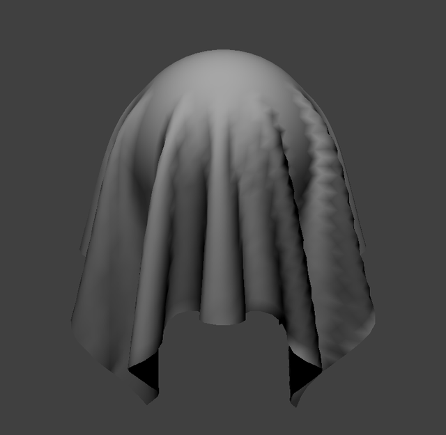 |
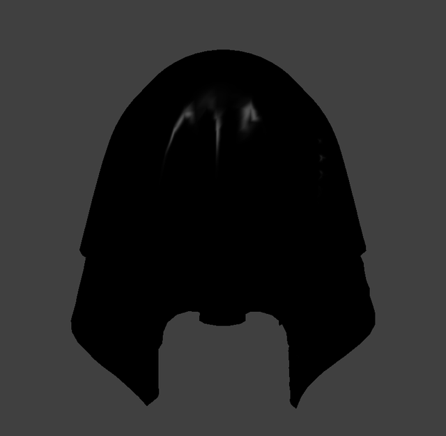 |
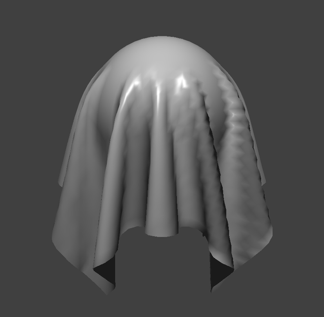 |
Texture mapping
Each vertex of the cloth has uv coordinates that run from 0 to 1 across the cloth, and the rasterizer interpolates them
for every pixel. The texture shader samples the texture at the pixel's uv with GLSL's texture function and
outputs that colour directly. For my custom texture, I replaced textures/texture_1.png with a rusty
corrugated metal texture from Poly Haven, scaled down to 1024 by 1024. The whole image is mapped once onto the cloth,
and it bends with the folds as the cloth drapes over the sphere.
|
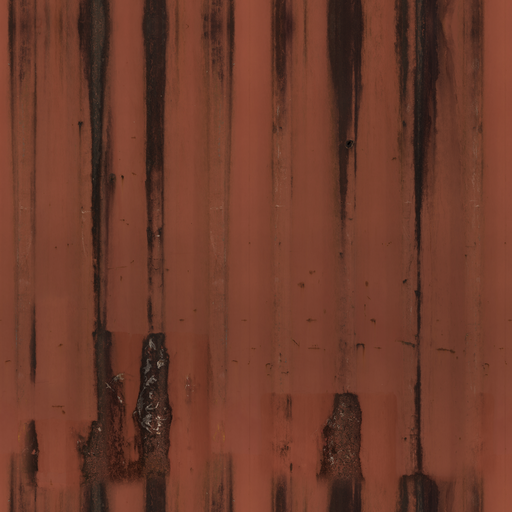 |
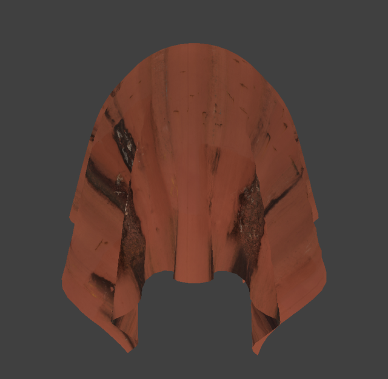 |
Bump and displacement mapping
Both shaders use a height map \( h(u, v) \), for which I replaced textures/texture_2.png with the height map
that comes with the same Poly Haven texture, so the ridges line up with the corrugation in the colour texture. I read the
height from the red channel.
Bump mapping keeps the geometry the same and only changes the normal used for lighting. In the fragment shader, I build a local frame from the tangent \( \mathbf{t} \), the bitangent \( \mathbf{b} = \mathbf{n} \times \mathbf{t} \) and the normal \( \mathbf{n} \), and estimate how fast the height changes in each direction by comparing it one texel away, \[ dU = \big(h(u + \frac{1}{w}, v) - h(u, v)\big)\,k_h k_n, \qquad dV = \big(h(u, v + \frac{1}{h}) - h(u, v)\big)\,k_h k_n, \] where \( w \) and \( h \) are the texture's width and height, \( k_h \) is the height scaling and \( k_n \) is the normal scaling. The perturbed normal is \( \mathbf{n}_o = (-dU, -dV, 1) \) in that local frame, and multiplying it by the matrix \( [\,\mathbf{t}\ \mathbf{b}\ \mathbf{n}\,] \) turns it into a world-space normal. I then shade with Blinn-Phong using this normal. Displacement mapping uses the same fragment shader, but the vertex shader also moves every vertex along its normal by the height, \( \mathbf{p}' = \mathbf{p} + \mathbf{n}\,h(u, v)\,k_h \).
All of the images below use a height scaling of 0.1 and a normal scaling of 480. My height map is smoother than the staff's example, so it needs a much larger normal scaling for the bumps to show. On both the cloth and the sphere, bump mapping makes the corrugation clearly visible as light and dark stripes, even though the surface is still smooth. On the sphere, the difference between the two methods is easiest to see at the silhouette. With bump mapping, the outline of the sphere is still a perfect circle, which gives away that the bumps are fake. With displacement mapping, the ridges actually stick out, so the outline is lumpy, especially at the top where all the ridges meet, and the sphere is slightly larger because the vertices only move outwards. Bump mapping is cheaper and works on any mesh, but it only looks right when the surface is viewed head-on. Displacement mapping looks correct from every angle, but it needs a mesh fine enough to represent the detail.
|
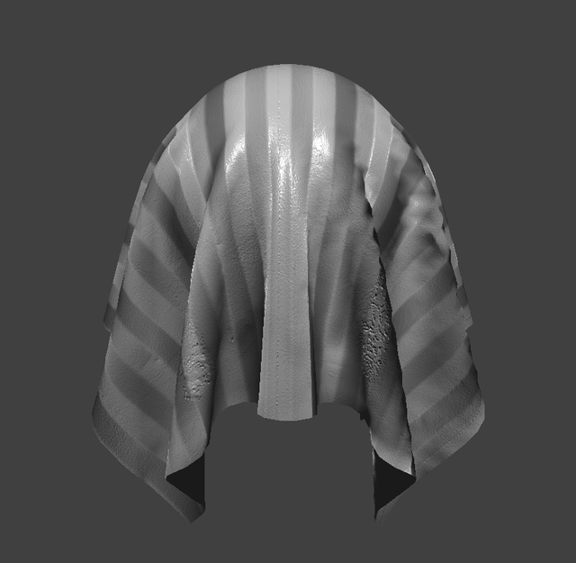 |
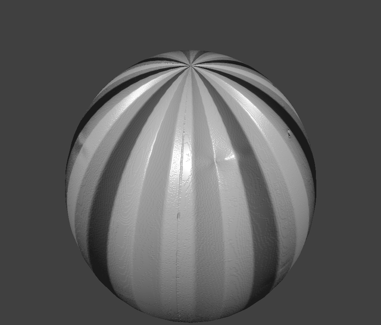 |
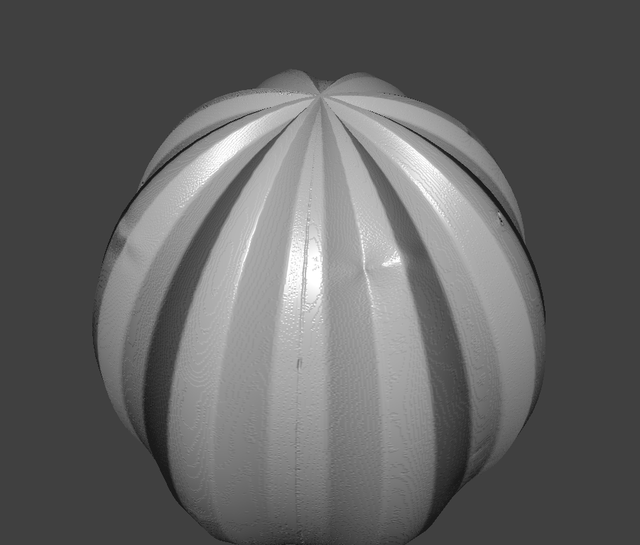 |
The images above use the default sphere mesh of 40 by 40. The images below compare a coarse mesh with
-o 16 -a 16 against a fine mesh with -o 128 -a 128. Bump mapping hardly changes, since the
normal is computed per pixel from the texture, so the stripes look equally detailed on both meshes. The only difference
is that the outline of the coarse sphere is visibly made of straight segments. Displacement mapping depends much more on
the mesh, because the height is only applied at the vertices. With 16 by 16, there are too few vertices to follow the
ridges, so the shape is blocky and angular, and the geometry does not line up with the shaded stripes. With 128 by 128,
the vertices sample the height map closely enough that the ridges come out as smooth, rounded bulges, and the outline
follows each ridge.
|
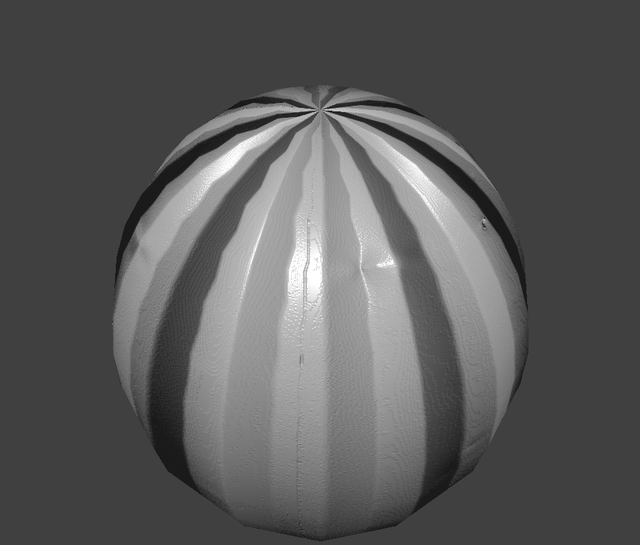 |
|
|
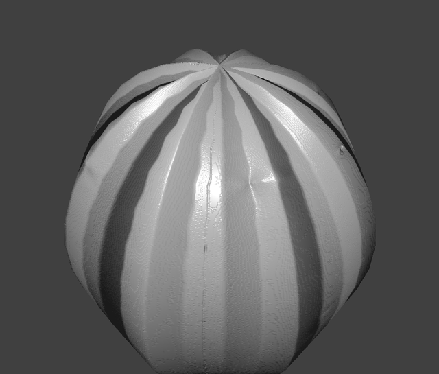 |
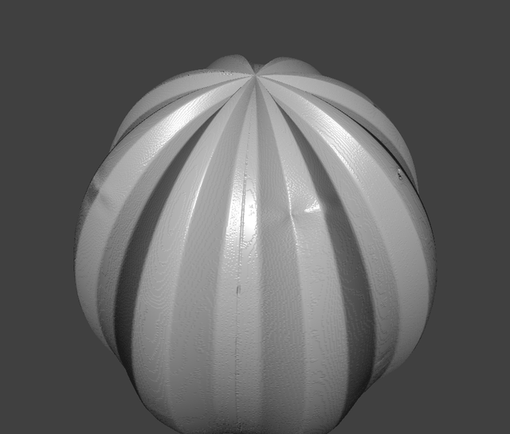 |
Mirror shader
The mirror shader makes the surface reflect an environment stored as a cubemap. For every pixel, I compute the direction
from the camera to the point, \( \mathbf{w}_o \), and reflect it about the normal with GLSL's reflect to get
the incoming direction \( \mathbf{w}_i \). I then look up the cubemap in that direction and use the result as the
colour. On the sphere, the environment appears as a distorted, fish-eye image of the scene, with the sky and the bridge
curving around the surface. On the cloth, every fold changes the normal, so the reflection is stretched and broken up
along the folds, which makes it look like a sheet of liquid metal.
|
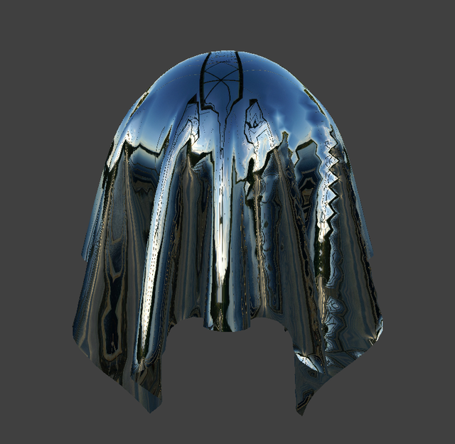 |
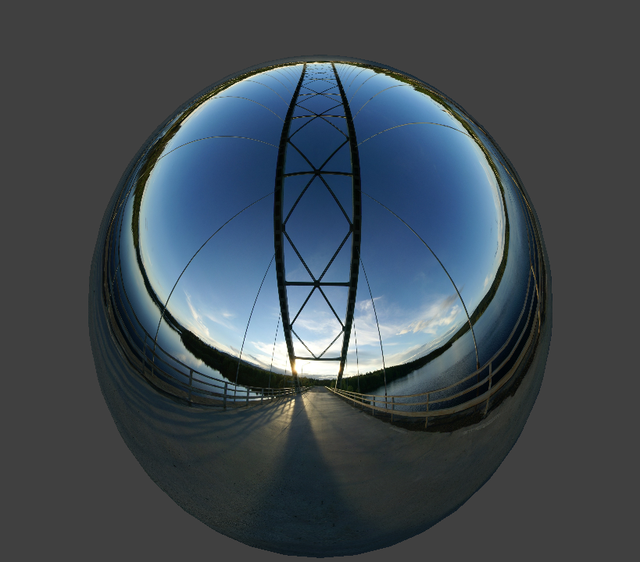 |